Al acceder al operador de servicios para pagos electrónicos nos posicionamos sobre la opción “Pago de Salarios”
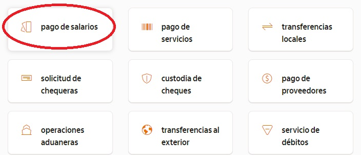
Al acceder a la opción PGS verificamos todas las opciones que tenemos disponibles para realizar desde la web.
En la primera opción encontramos la función “cargar empleado” a través del mismo se pueden realizar dos acciones:
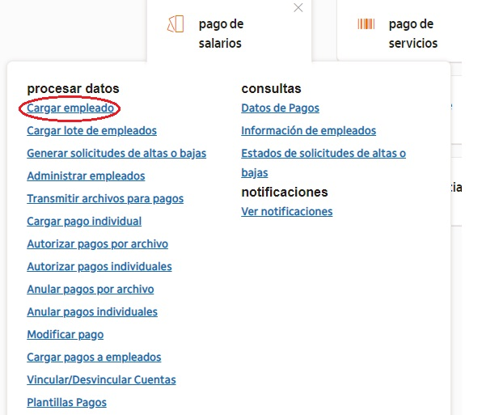
Al acceder al la opción “cargar empleado” se visualiza una ficha en blanco y en el encabezado encontramos la opción Registrar empleado y solicitar alta de cuenta que debe quedar de esa manera en caso que se quiera solicitar el alta o vincular la cuenta del colaborador en forma inmediata
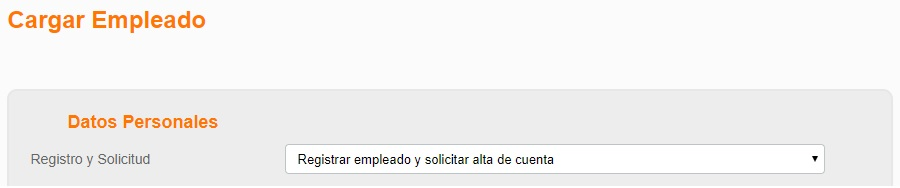
En caso de ingresar los datos del colaborador y aún no se va a solicitar el alta del mismo (caso de funcionarios que aún no pasan el periodo de prueba) se puede registrar el empleado y al pasar el periodo de prueba solicitar el alta correspondiente para la generación del kit de salario
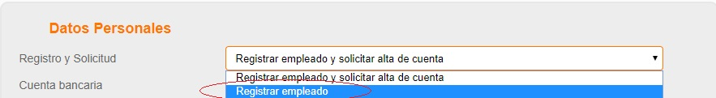
El cliente a través de la plataforma tiene la opción de solicitar una cuenta nueva para un colaborador que aún no posee cuenta con el Banco o vincular la cuenta existente en caso que el mismo ya posea una cuenta previa verificación de que la misma siga activa Luego más abajo debe ir cargando los datos personales del colaborador para ambos casos (Apertura de cuenta nueva o cuenta existente) Los campos con asterisco anaranjado son los campos obligatorios y los que no son opcionales
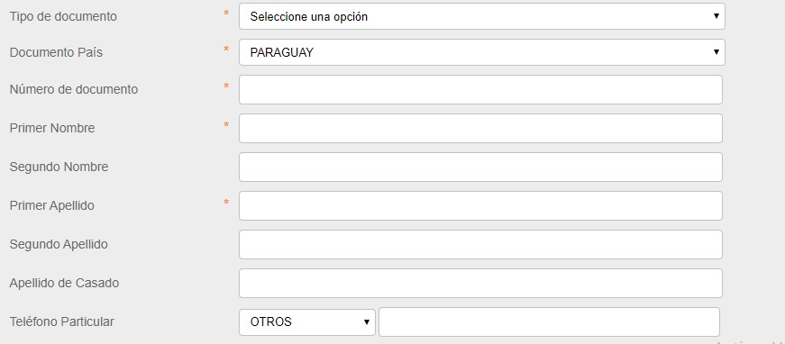
En caso que el colaborador no cuente con número de casa se puede colocar un numero de forma genérica ej 123 111 etc y con relación a la calle principal si no posee nombre la calle del domicilio se puede colocar el nombre de la calle principal más próxima como referencia
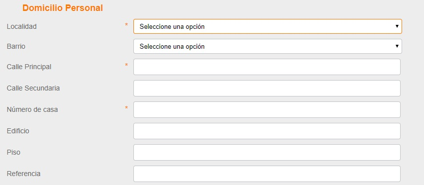
Contamos con clientes PF que no poseen numero de línea baja en la opción de teléfono laboral, por lo que sería ideal colocar la opción de celular en dicha opción, los clientes que no cuentan con línea baja normalmente ponen números genéricos como por ejemplo (021 111 111 entre otros)
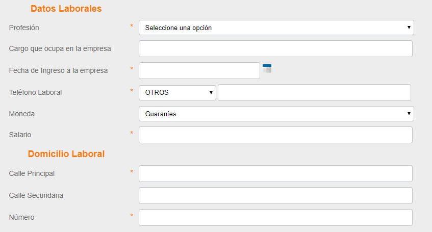
En la opción de productos se debe seleccionar la opción cuenta, ya que también existe la opción pre paga que si se selecciona no genera todos los productos del kit de salario ( Seguros entre otros). En caso que el cliente esté cargando una reasignación debe seleccionar la agencia en la que el funcionario desea operar de manera a vincularlo a la misma, no se generará un kit nuevo para éste colaborador
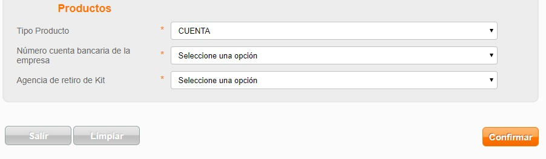
Cuando se confirma el alta de la cuenta para los casos de “apertura de nueva cuenta” lo recomendable es que el aviso contenga la información de que el alta será informada en el transcurso de 72 horas hábiles desde el momento de la carga.
Existe la posibilidad de cargar lotes de empleados que a diferencia de la opción “cargar empleados” con ésta alternativa el operador del servicio puede carga varios colaboradores de una sola vez, más abajo la explicación
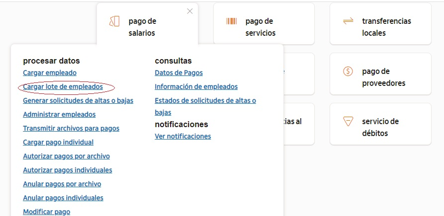
Al ingresar a la opción el operador debe descargar la planilla modelo en formato Excel indicada en la imagen, en donde puede realizar todas las cargas de altas que posea el cliente de una sola vez, en la misma planilla puede solicitar tanto aperturas de cuenta como vinculaciones.
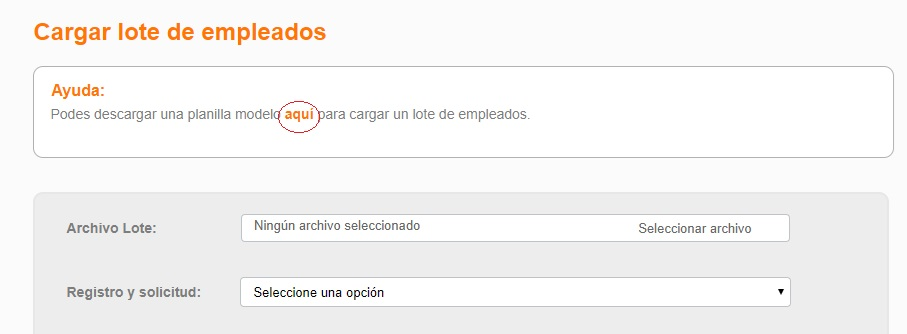
Para evitar que la plataforma rechace la planilla los datos ingresados no deben ser copiados desde otra planilla ya que esto causa que la misma pierda el formato y no pueda ser procesada, por lo que se recomienda que la misma sea completada en forma manual y respetando el aviso que esta determinado en la parte superior de la planilla.
Existen campos como el marcado en la imagen que poseen datos predeterminados, los cuales si pueden ser copiados son los mismos para todos los colaboradores cargados. Ejemplo (Tipo de documento, documento País etc.)
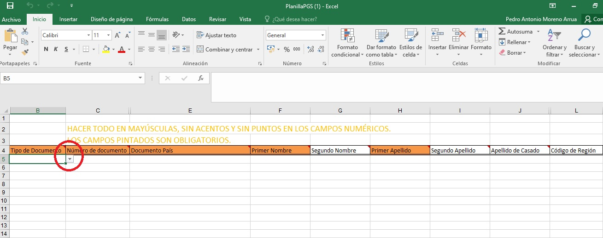
Una vez completa la planilla se debe guardar en alguna carpeta de fácil acceso por el operador y seleccionar el mismo como se visualiza en la opción 1 y luego seleccionar la opción “registrar y generar solicitud” de manera a ingresar la solicitud del cliente
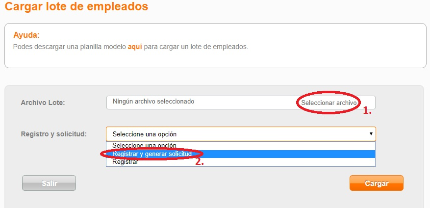
Con la opción de “Generar solicitudes de altas o bajas” se logra dar de baja o alta las cuentas seleccionadas sin eliminar las mismas de la nómina de salarios, por ejemplo si tenemos un caso de resposo por embarazo, se puede utilizar ésta opción mientras dure el proceso de reposo.
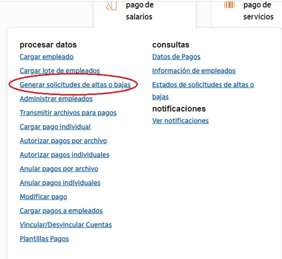
Al acceder a la opción figura la opción “altas” entendiendo que todos los funcionarios de la nómina se encuentran en alta, en caso que se quiera dar de baja un funcionario se selecciona la opción “baja”, escribir obligatoriamente la observación abajo y se selecciona el o los funcionarios que se desean cesar momentáneamente.
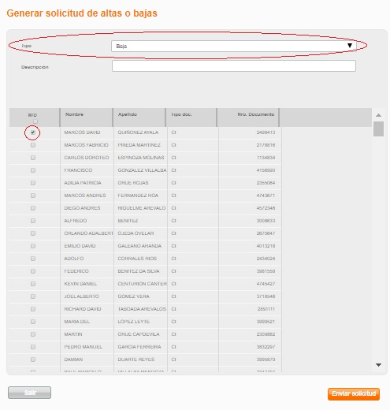
Una vez que el o los funcionarios cesados tengan que volver a la nómina se accede a la opción de generar solicitudes de altas o bajas y aparecen en el listado inicial, por lo que se les selecciona y se vuelve a colocar la observación para que vuelvan a figurar en la nómina
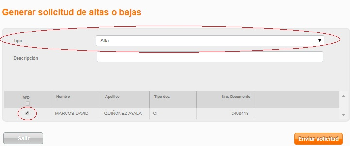
Cabe destacar que con esta opción el funcionario no es eliminado de la nómina ni tampoco es desvinculado de la cuenta madre de la empresa, sólo es ocultado de la nómina de pagos
Dentro de la opción de administrar empleados propiamente dicho si tenemos la opción de eliminar empleados de la nómina, de ésta manera borrando el registro del mismo de la base de la empresa y desvinculándolo de la cuenta madre, en caso de eliminarlo y querer reingresarlo se accede a la opción de “cargar empleado” y seleccionando la opción “vincular cuenta”.
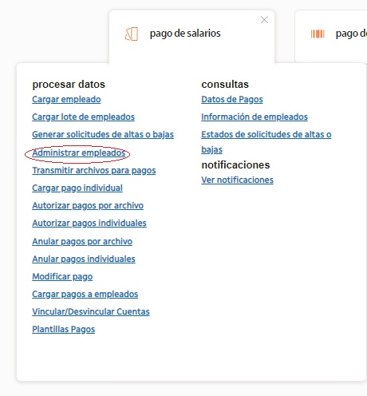
Al ingresar a “Administrar empleados” vemos exactamente la imagen presentada más abajo, se pueden buscar al funcionario a través del nombre o el número de documento, como vemos marcado más abajo se pueden seleccionar dos opciones:
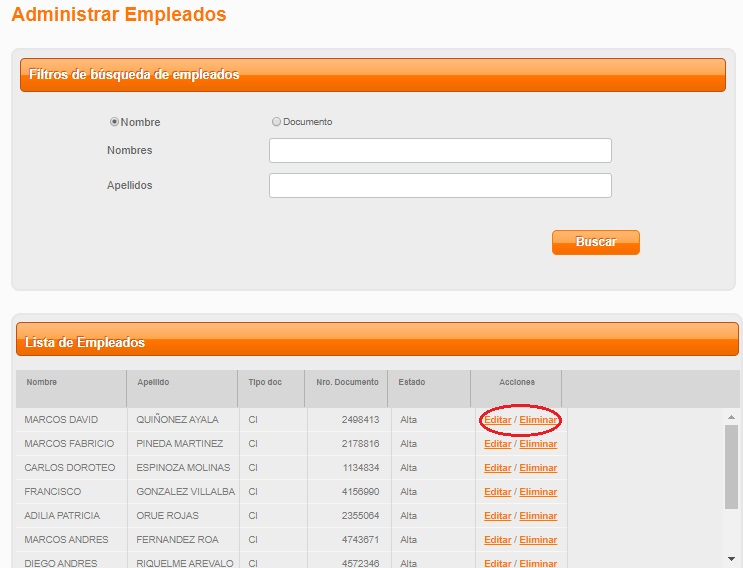
Es importante que se vea la posibilidad de solucionar la opción editar empleado, ya que hasta el momento solo sirve para consultar datos de los colaboradores y no permite modificar los datos del mismo, lo cual el cliente entiende al observar la opción
La opción de transmitir archivos para pagos en el servicio de pago de salarios, hasta la fecha de puede realizar de dos maneras:
Éste último es posible a través del sistema propio que posea la empresa, desde el banco le facilitamos el formato que debe poseer la estructura del archivo txt para que pueda levantar a la plataforma y pueda crear el archivo a ser autorizado.
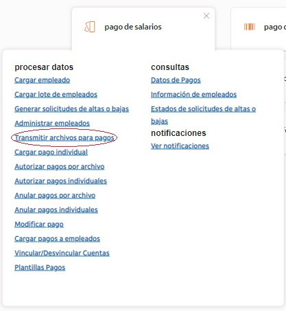
Podemos observar en la imagen que al querer seleccionar el concepto tenemos la opción de acreditación normal mensual y la opción de orden de pago que normalmente la empresa puede solicitar la autorización si no es la fecha habitual de pago de aguinaldo.
Se selecciona el mes al cual corresponde la acreditación.
Luego se carga el archivo generado por los sistemas mencionados anteriormente y por último se puede completar en forma opcional la referencia del pago o acreditación a ser realizado.
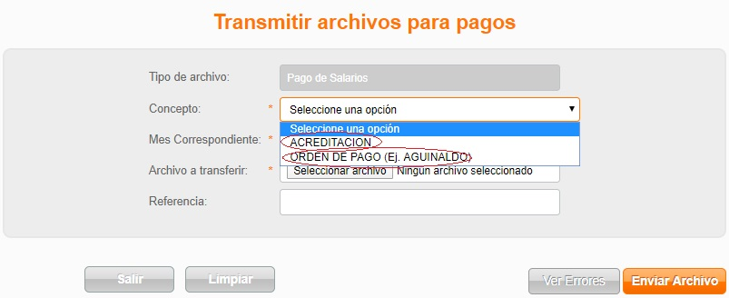
La opción de carga de pago individual se utiliza normalmente para cargas específicas para colaboradores que solicitan adelanto de salarios, pago de viáticos o comisiones, en donde se realiza la carga que visualizamos la carga
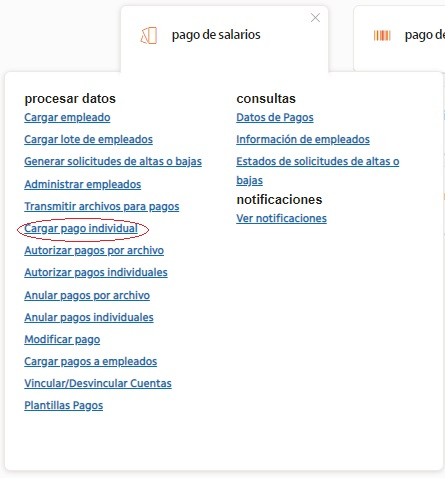
Al acceder podemos visualizar la ficha de modo a cargar los datos para la carga del pago, en donde los campos con los asteriscos anaranjados a lado, indican los campos obligatorios de carga, al completar todos éstos datos al final se pueden escribir los comentarios y referencias de la operación de pago individual
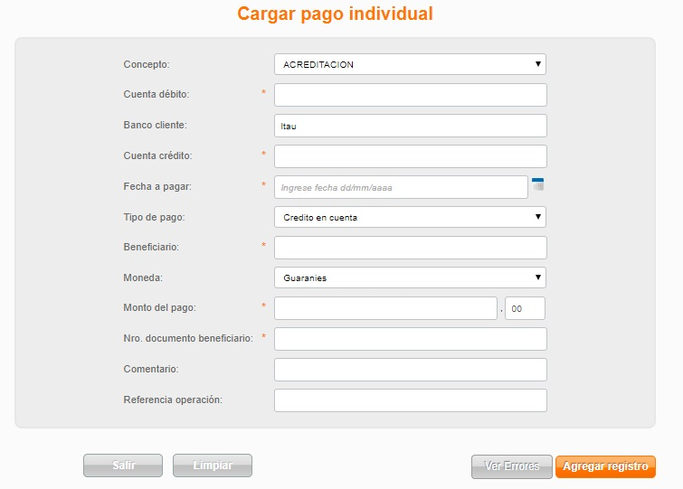
Dentro de las opciones encontramos la opción para modificar pagos, a través de ésta opción se puede modificar un archivo para pago ya sea individual o por lote, sola y únicamente antes de realizar la autorización de éstos pagos
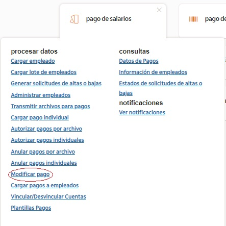
Para buscar el pago cargado (en caso de que sean varios) existen múltiples formas detalladas más abajo.
Se puede buscar a través de las fechas de carga, un rango de fecha conocido, los rangos de fechas de procesos del banco, el colaborador especifico al que se le quiera realizar la modificación, entre otros.
Al seleccionar la opción específica presionamos el botón de “consultar”
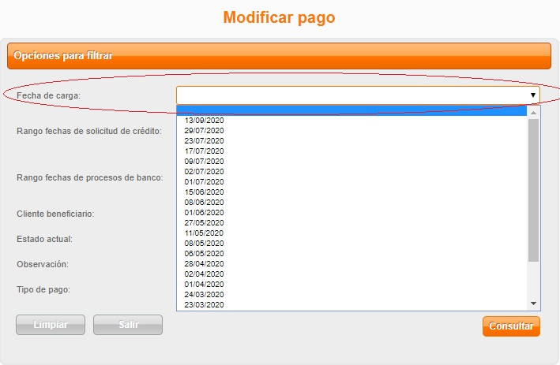
Al encontrar el o los pagos podemos observar un pequeño lápiz que una vez presionado habilita la opción para modificar todo lo relacionado al pago del o los colaboradores seleccionados, principalmente el monto y la fecha a acreditar.
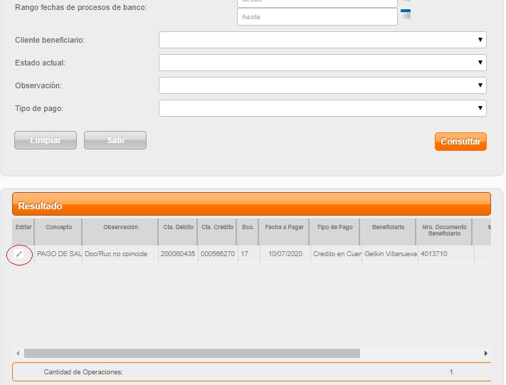
Una vez que se hayan modificado los datos verificamos en la imagen dos opciones el primero es la opción para guardar y modificar y la segunda para cancelar lo editado.
A través de esto se pueden modificar los pagos en caso de haber un error el la primera carga.
Se pueden realizar en 2 situaciones.
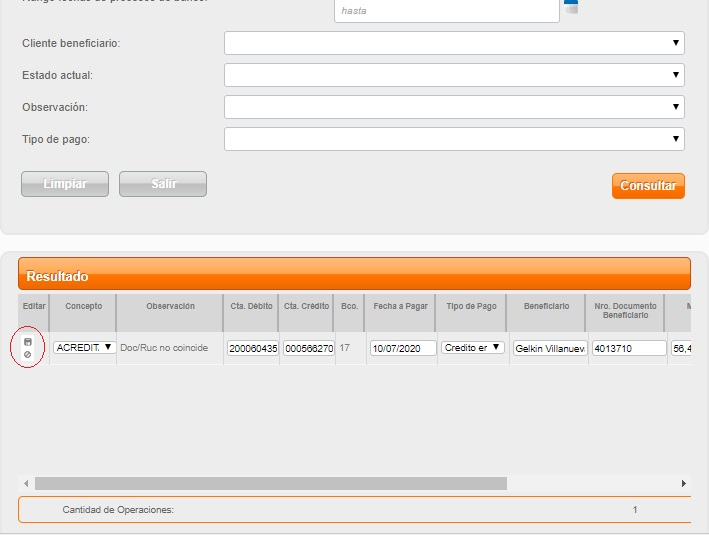
La opción de cargar pagos a empleados es la función principal y más utilizada dentro de la plataforma, a través de la misma se puede realizar la carga de pago por lotes de empleados. Veamos en las siguientes diapositivas los pasos a tener en cuenta para la carga.
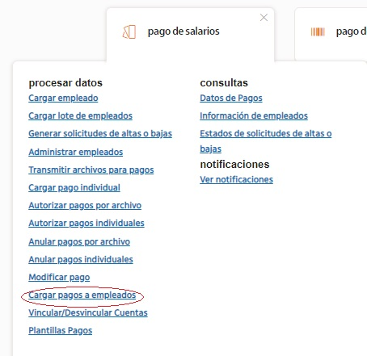
Normalmente aparece el aviso de saldo protegido anterior a éste paso que sería ideal que se visualice cuando la opción de Orden de pago esté habilitada.
Al seleccionar estoy de acuerdo y presionar aceptar pasa a la visualización observada más abajo en donde en el primer encabezado debemos seleccionar el concepto general que pueden ser:
En la esquina superior izquierda se observa la opción de utilizar plantilla, que al presionarla nos lleva al listado de plantillas guardadas que estaremos mostrando más adelante.
Luego seleccionamos los funcionarios que estarán percibiendo acreditación y se puede realizar de dos maneras:
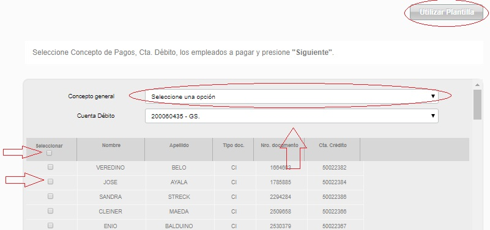
En ésta parte del proceso la mayoría de los clientes desean ordenar los colaboradores en forma alfabética de manera a filtrar a los que no percibirán acreditación, a la fecha no se puede realizar ésta acción
La opción de cargar pagos a empleados es la función principal y más utilizada dentro de la plataforma, a través de la misma se puede realizar la carga de pago por lotes de empleados. Veamos en las siguientes diapositivas los pasos a tener en cuenta para la carga.
Normalmente aparece el aviso de saldo protegido anterior a éste paso que sería ideal que se visualice cuando la opción de Orden de pago esté habilitada.
Al seleccionar estoy de acuerdo y presionar aceptar pasa a la visualización observada más abajo en donde en el primer encabezado debemos seleccionar el concepto general que pueden ser:
En la esquina superior izquierda se observa la opción de utilizar plantilla, que al presionarla nos lleva al listado de plantillas guardadas que estaremos mostrando más adelante.
Luego seleccionamos los funcionarios que estarán percibiendo acreditación y se puede realizar de dos maneras:
En ésta parte del proceso la mayoría de los clientes desean ordenar los colaboradores en forma alfabética de manera a filtrar a los que no percibirán acreditación, a la fecha no se puede realizar ésta acción
Una vez seleccionados los funcionarios y presionado la opción siguiente, pasa a la imagen visualizada más abajo en donde básicamente se puede cargar el monto de los pagos realizando un doble click sobre el monto del pago, también se puede modificar la fecha de acreditación, de ésta manera por ejemplo cargamos el pago el 12/09/2020 y programamos el pago para el 15/09/2020 y por más que se realicen las autorizaciones recién se estará acreditando salarios en la fecha programada a las 00:15 hs. Amaneciendo el funcionario con el importe en su cuenta.
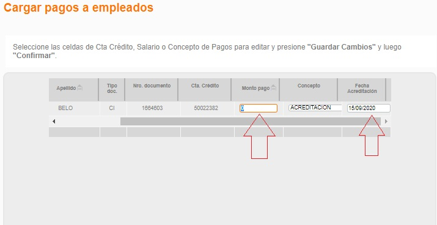
En ésta pantalla si ya se puede realizar el ordenamiento alfabético de los colaboradores pero debe ser antes de modificar el monto del pago, si se realiza éste paso primero no se podrá realizar el ordenamiento después.
Una vez cargado el monto de los pagos se presiona la opción guardar cambios y automáticamente se visualiza el monto total de manera a corroborar con la planilla que posee el cliente si el monto total coincide con lo cargado, si no puede presionar sobre el monto cargado incorrectamente de manera a modificarlo y verificarlo nuevamente presionando la opción guardar cambios.
En caso que todo esté correcto directamente se presiona confirmar y se genera el archivo para pagos que se debe autorizar.
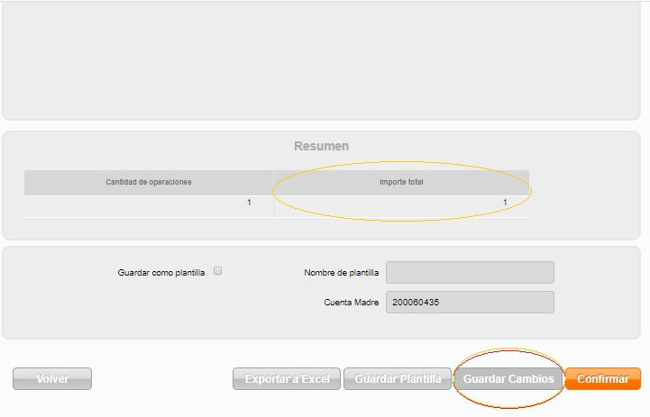
En caso de querer guardar como plantilla previo a la opción guardar cambios seleccionamos el cuadro que hace referencia a “guardar como plantilla señalada en la imagen, de ésta manera nombramos la misma y presionamos la opción “guardar plantilla” de ésta manera se queda guardada la misma dentro de la plataforma.
Más adelante estaremos hablando acerca de la funcionalidad de la opción GUARDAR COMO PLANTILLA.
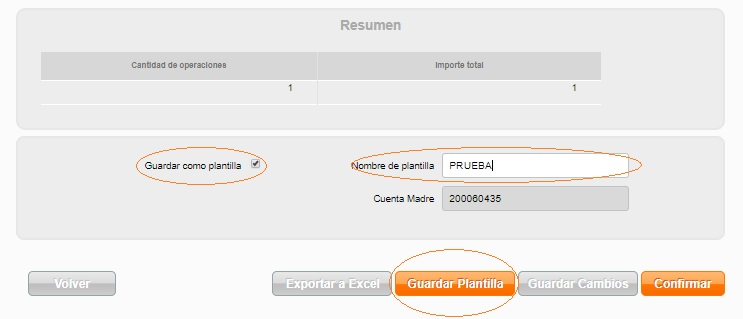
A través de la opción Vincular/Desvincular cuentas se pueden asociar o desvincular cuentas sin necesidad de eliminar el registro del empleado, para utilizar ésta función el colaborador debe estar cargado dentro de la nómina necesariamente.
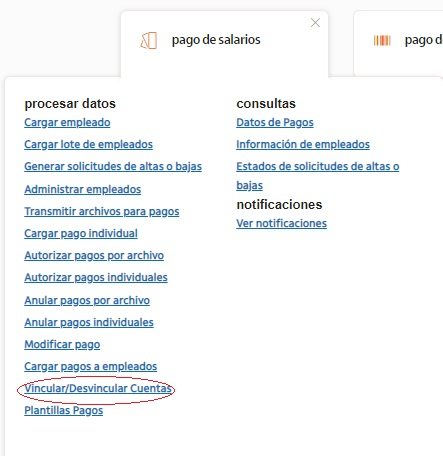
Se puede filtrar por nombre o por número de documento. Una vez encontrado dentro del listado al colaborador, procedemos a seleccionarlo.
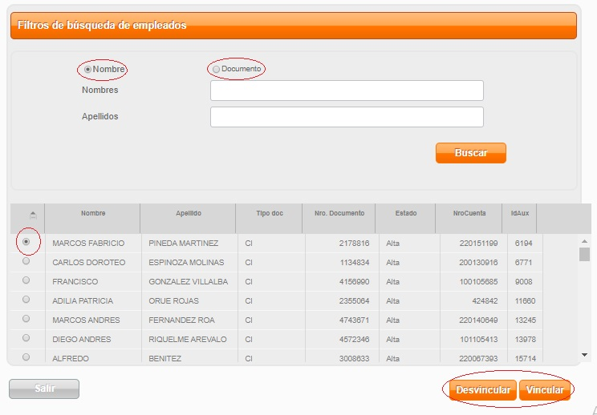
De acuerdo a la necesidad elegimos la opción vincular o desvincular (para ambos procesos los pasos son similares), al seleccionar la opción precisada abaja despliega el campo para cargar el número de cuenta del empleado y seleccionar la cuenta madre de la empresa a vincular, una vez cargados ambos campos se selecciona la opción confirmar y de ésta manera se procede a la vinculación o desvinculación de cuentas.
Normalmente esto se utiliza en caso que la empresa pagadora tenga más de una cuenta catastrada para el servicio PGS.
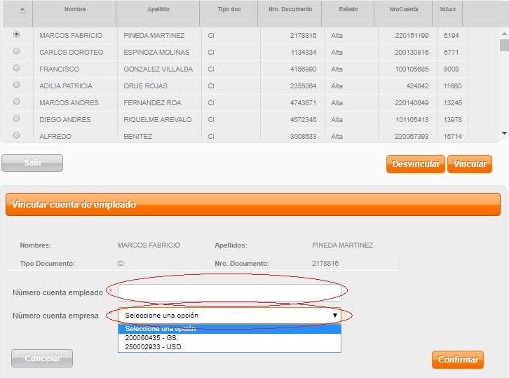
En caso que el colaborador ya esté vinculado la plataforma emite un mensaje informando que la vinculación ya existe o en su defecto si aún no se encuentra registrado informará sobre el error.
La opción “Plantillas Pagos” sirve para que al momento de realizar la carga a través de la opción “Cargar pagos a empleados” el operador tenga la opción de guardar dicho pago como plantilla y reutilizarla en el caso de que los pagos a colaboradores sean constantes con relación a la misma nómina y sólo cambien los montos, de igual manera se pueden agregar o quitar colaboradores de las plantillas de pagos.
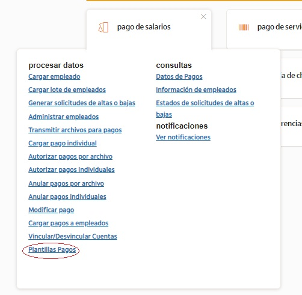
Al ingresar a la opción aparece el listado de las plantillas guardadas, cabe destacar que la plataforma puede guardar hasta 20 plantillas como máximo.
Una vez ubicada la plantilla a modificar se selecciona y se presiona la tecla siguiente, de manera a editarla y modificarla de acuerdo a la necesidad.
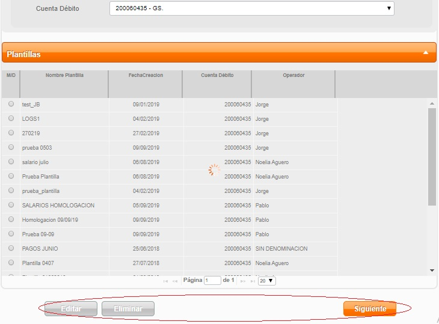
Una vez ingresada a la plantilla a modificar aparecen los colaboradores guardados abajo aparece la opción para agregar o modificar.
En caso de querer eliminar un colaborador de la lista, se lo selecciona y luego se presiona la opción “Eliminar Registro”. Por otra parte si se quiere agregar un colaborador directamente se presiona la opción agregar registro y aparecerá el listado de funcionarios registrados y vinculados a la cuenta de la empresa de manera a agregarlo. Una vez agregado se puede modificar el monto a acreditar y la fecha de creditación.
Finalizado el proceso de carga se presiona la opción guardar y el archivo de pago es generado para su posterior autorización.
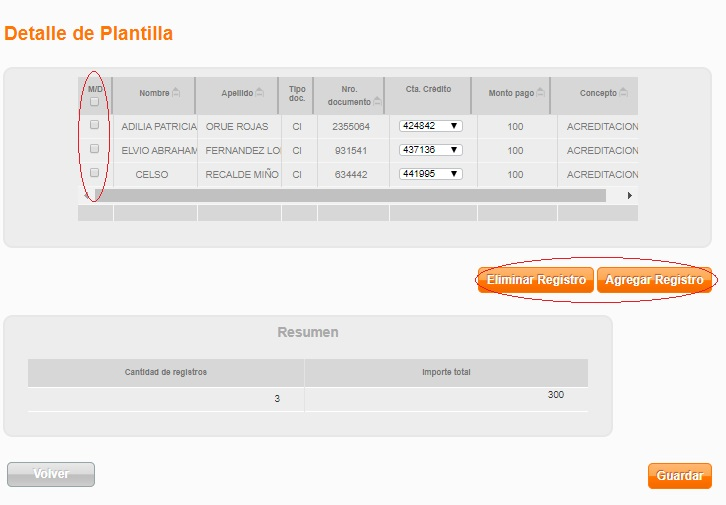
Para ahondar en la opción de agregar registro ésta es la pantalla que aparece al ingresar, podemos buscar el registro del colaborador a través del nombre o por el número de documento, al encontrarlo más abajo lo seleccionamos, ¡Importante! Siempre seleccionar el concepto para el pago del colaborador.
Una vez realizados los pasos presionar la opción agregar registro.
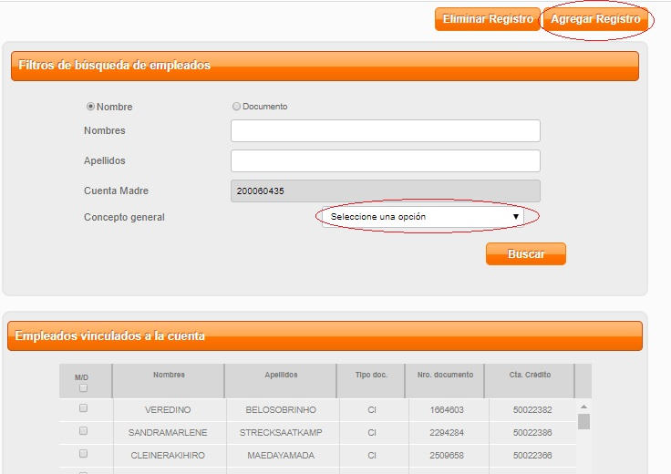
Como detallamos al inicio una vez agregado el registro se modifica el monto a acreditar y seleccionamos la opción “guardar” de manera a actualizar la plantilla de pagos.
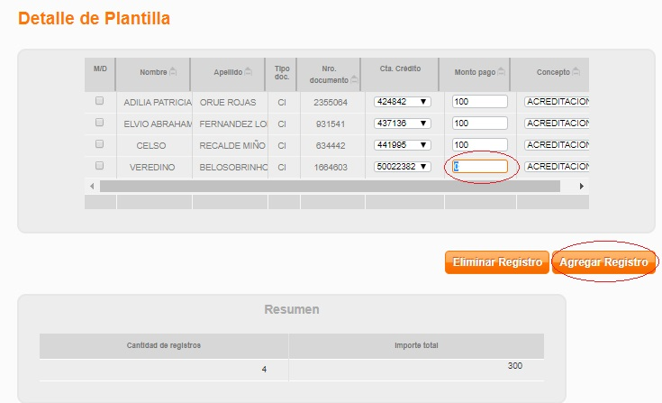
Confirmación de modificación de plantilla de pagos.
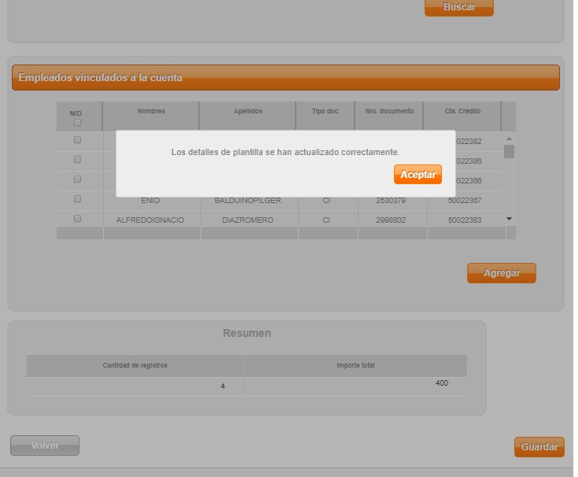
Una vez modificada la plantilla se puede acceder a la misma para realizar la confirmación del archivo para su posterior autorización anulación de acuerdo a la evaluación del operador autorizante.
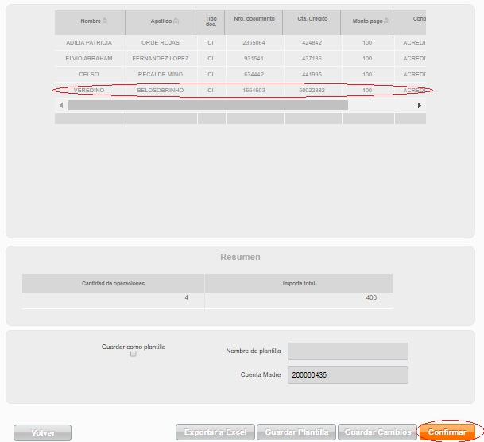
Un dato a tener en cuenta que mencionaban los operadores es que no podían generar el archivo de pagos a través de plantillas pagos si éstos no se modificaban.
Básicamente indicaban que si o si se debía realizar alguna modificación mínima para que la misma se pueda utilizar.
También manifiestan que suele tardar mucho al momento de cargar las plantillas guardadas.
La opción Datos de Pagos es una herramienta muy útil para la autogestión de consultas de pagos de los operadores del servicio PGS, a través de éste se pueden consultar los estados en los que se encuentran los pagos, quien o quienes ya realizaron la autorización y utilizar como herramienta de consultas para tener en cuenta el histórico de pagos registrados de hasta 1 año atrás.
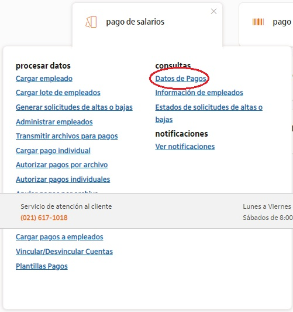
Esta herramienta es muy importante que podamos fomentar e impulsar para que los operadores puedan utilizar, disminuiría de manera considerable el volumen de consultas que realizan los clientes en diferentes canales de todas las áreas involucradas, PGS Adm y Com Soporte Interhome, MO y Comerciales
Se pueden buscar los pagos de diferentes maneras, la primera es a través de la fecha de carga, en donde el operador puede buscar por fecha de carga (que registra el histórico de todos los pagos cargados) en caso que el mismo sepa la fecha exacta en que se realizo la carga del o los pagos, y automáticamente la plataforma muestra todos los pagos y todos los estados que se registraron en ésa fecha.
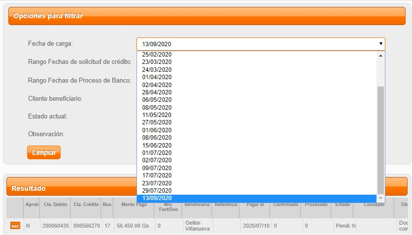
En caso que el operador no sepa la fecha exacta de carga también puede buscar por rango de fecha estimativa, como dijimos anteriormente hasta 1 año quedan los pagos cargados registrados. Tener en cuenta que si se buscar por rango de fecha el espectro de búsqueda es más amplio.
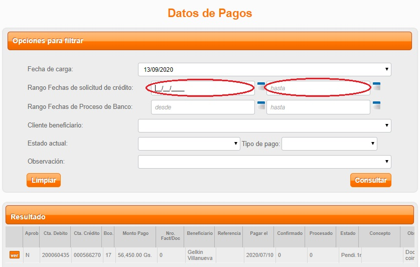
En caso que el operador necesite verificar o consultar los pagos cargados a un colaborador en específico, lo puede buscar en la opción marcada en la imagen referente a “Cliente Beneficiario”.
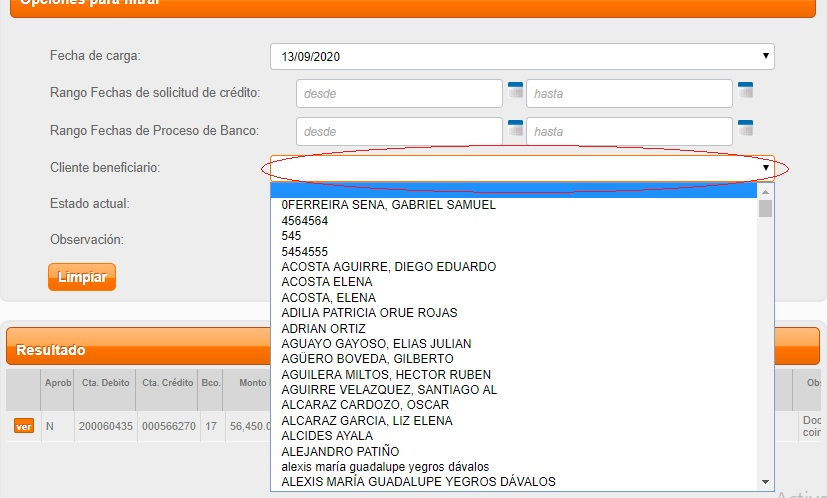
También existe la opción de buscar por estado de pagos. Esto sería útil en caso de que el operador de carga necesite consultar en que estado se encuentran el archivo de pagos cargados, de manera a reclamar a el o los autorizantes en caso de que los pagos no hayan sido autorizados y acreditados efectivamente.
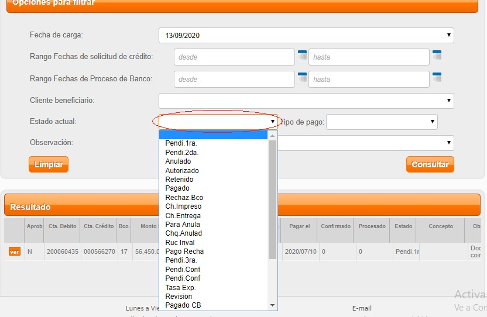
Se puede buscar por tipo de pago también, pero ésta opción sería la menos utilizada ya que dentro de la plataforma solamente se puede realizar a través de crédito en cuenta.
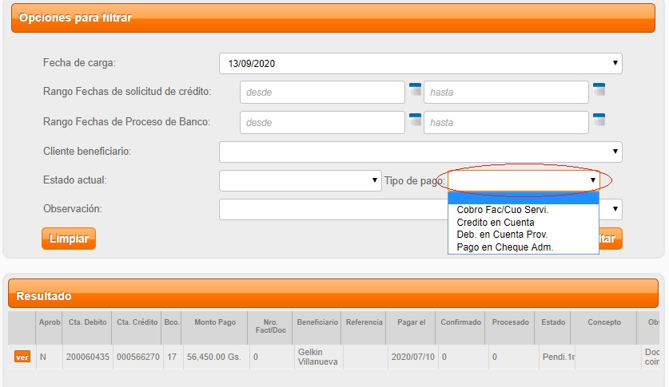
Cabe destacar que también se encuentra disponible la opción de buscar a través de las observaciones, que en caso de querer agrupar todos los pagos registrados bajo una misma observación ésta es una opción valida de búsqueda.
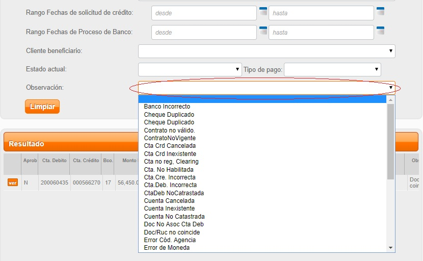
Una vez encontrado el o los pagos se puede seleccionar la opción marcada en amarillo “Ver” y automáticamente se despliega la ventana visualizada más abajo que indica “Auditoría de la operación” en donde se detallan las acciones y los operadores encargados de las mismas, tanto de las anulaciones, autorizaciones, modificaciones y carga.
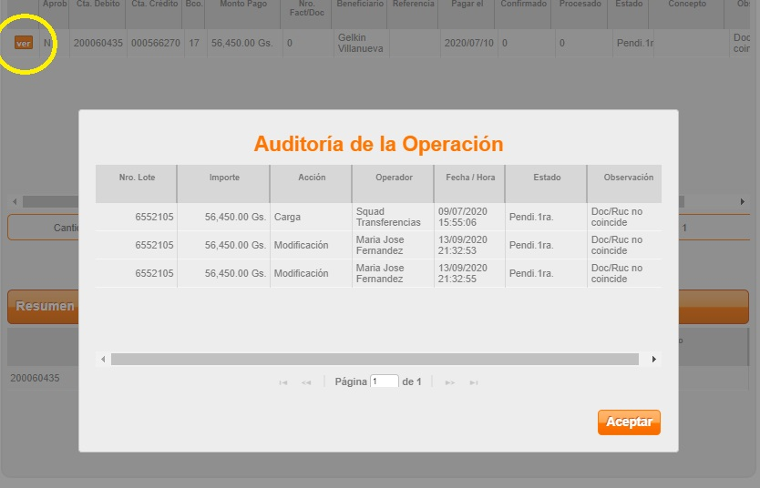
Una vez verificada la búsqueda, la plataforma posee 2 opciones para bajar éstos archivos en dos formatos que pueden ser guardados dentro de la computadora del operador como legajo respaldatorio ante consultas de los salarios acreditados para manejo interno de la empresa pagadora.
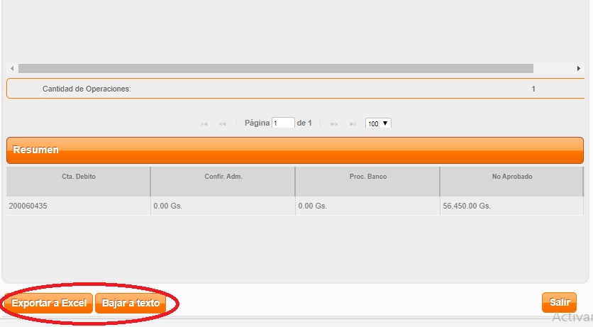
Visualización de formato de archivo TXT
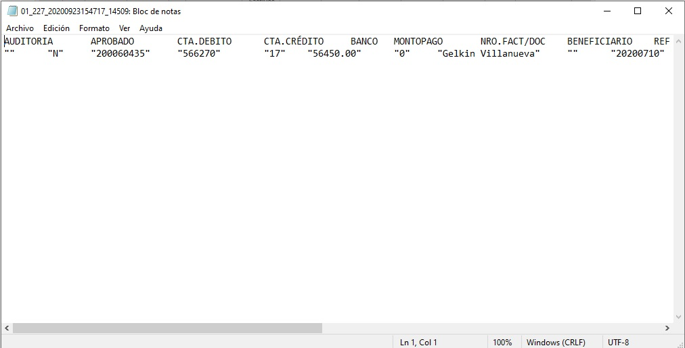
Visualización de formato de archivo Excel, en donde la presentación es mucho más formal y amigable para el operador del servicio
Con la opción de información de empleados, el operador posee la opción de verificar todos los datos cargados de los colaboradores de la empresa, datos personales, laborales y número de cuenta generado.
Se puede buscar por nombre o por número de documento el colaborador especifico que se desea consultar.
En caso de buscar por número de documento posee las opciones de tipos de documento en caso que el mismo no posea o no este registrado con su CI
Se puede utilizar la opción de exportar a Excel el listado total de colaboradores que están en la nómina actualmente y guardarlos en alguna carpeta dentro de la computadora del operador.
La opción de estados de solicitudes de altas o bajas se utiliza para consultar las solicitudes cargadas en la opción “cargar empleado” ya sea para apertura de cuenta nueva o cuenta existente, de ésta manera el operador que carga puede realizar el seguimiento del estado del alta solicitada.
Al acceder vemos las opciones disponibles de búsqueda, por nombrar tenemos la opción de buscar a través del rango de fecha de carga, alguna descripción en específica, el tipo de solicitud (Altas o Bajas) o los diferentes estados que se visualiza en la imagen más abajo.
Dentro de la opción de notificaciones se pueden visualizar los mensajes emitidos por la plataforma a medida que se van realizando las acciones como por ejemplo (solicitudes de altas, cargas de pagos, vinculaciones de cuentas,etc)
Ejemplo de mensajes emitidos por la plataforma, se pueden acceder a los detalles y el estado del mismo, en este caso ya fue leído.
Por último el operador tiene la opción de modificar la contraseña, en donde, al acceder a la página principal puede visualizar en la esquina superior derecha el icono de configuraciones y al acceder se visualiza la imagen detallada más abajo en donde debe ingresar la contraseña actual y la nueva dos veces
Un dato importante a tener en cuenta es que para crear el PIN debe cumplir con las siguiente característica: